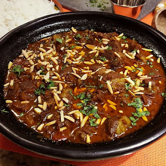

Lamb Tagine

African Lamb TagineIf you like to experiment in the kitchen with new ways of cooking
and definitely new flavors, this African Lamb Tagine is the perfect dish to make!
Ingredients
RUB
- 1/2 Tbsp smoked paprika
- 1/2 Tbsp ground cumin
- 1/2 Tbsp ground ginger
- 1/2 Tbsp ground sumac
- 1/2 Tbsp ras el hanout
- 1 tsp ground turmeric
- 1 tsp ground cinnamon
- 1/8 tspcayenne pepper, or more to taste freshly ground black pepper, to taste (i always use mixed peppercorns)
Tagine
- 1 1/2 lb lamb shoulder (substitute chicken), cut into bite size pieces
- 2 c low-sodium chicken broth if needed, divided
- 1/4 tsp moroccan mint flakes, or more to taste
- freshly ground black pepper, to taste (i always use mixed peppercorns)
- 1/4 c raisins, sultanas, currants, figs, dates or apricots
Steps
- In a small bowl, mix all the ingredients for the rub together. Place lamb cubes in a large
bowl and sprinkle on the rub mixture; stir until meat is well coated. Cover and
transfer to the refrigerator for at least 18 and up to 24 hours.
- The next day, place a diffuser on the burner under the tagine.
Add oil and turn the heat to medium. When hot, add onions and sauté for 2 minutes. Add garlic
and sauté for only 1 minute. Add lamb cubes and stir constantly; cook
for 10 minutes. Add tomatoes, stir well and cook for another 5 minutes.
- Pour in 1 cup chicken broth and add brown sugar, molasses, mint flakes, saffron, sea salt
and freshly ground black pepper. Stir and increase the heat to medium-high. If desired,
add ¼ cup dry fruits of your choice. When the mixture starts simmering,
cover, reduce heat to medium-low and cook for 30 minutes, stirring often.
During this time, if it needs more liquid, add a little chicken broth.
- Half an hour later, remove the tagine from the heat and stir well before sprinkling on toasted slivered almonds and fresh chopped cilantro.
Serve immediately with white rice, saffron rice or couscous along with flatbread (hobz). Makes 4-6 servings